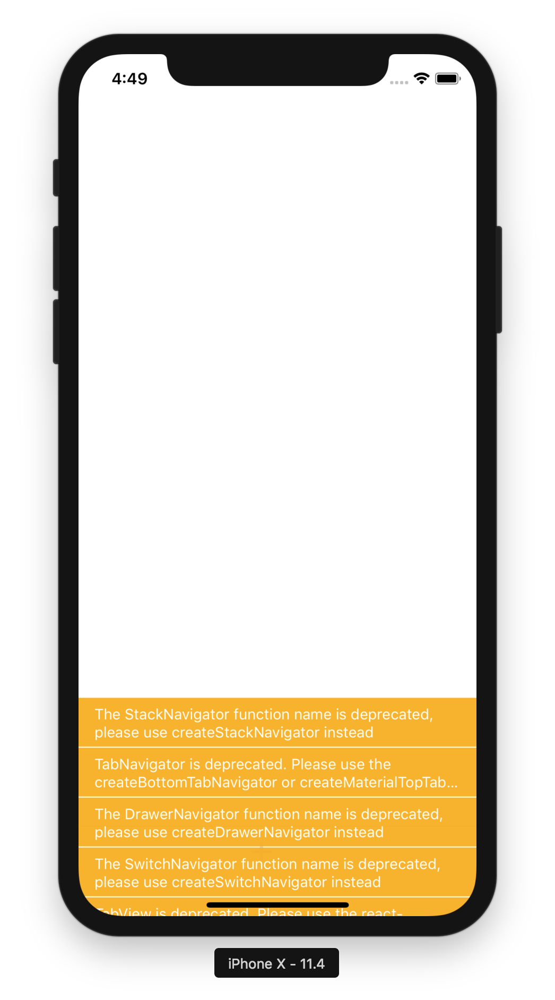

React Native & ClojureScript - An obscure stack
I have been working on a new side project for about two months now, a task manager app which is primarily aimed at iOS. This is a typical “scratching my own itch” side project. There are plenty of task manager apps on the App Store, but none of them seems to do exactly what I would like mine to do.Of course I cannot disclose the exact of features at this point, both because I’m really slow at development and also because a lot is still work in progress. I can say that none of the big ones (top 200 productivity) does everything I want.
My technical requirements are not outlandish, I need access to the system calendar, location services, trigger notifications, and that is about it. Performance should of course be great, but considering that we are talking about an app that essentially boils down to a lot of tables, and I know my way around handling large amounts of data, I am not worried about that.
Originally I started developing this app in Swift, using XCode for development. Apart from having to fight with a somewhat buggy vim-plugin for Xcode, package management for mobile environments on Swift is a big mess, though I managed to load in the libraries I needed in the end. Then there is Swift, which especially in the way Apple wants you to write apps, using the visual interface designer and control-dragging buttons into source files, is not ideal. It feels unnecessarily low level in a lot of places, and the default project structure promotes a rather imperative style, without any real solution to manage state in a sensible way.
So after having built a first prototype in the classic way on Swift, I decided to have a look around at alternatives. I did not want to use Cordova, which is essentially the Electron of mobile platforms, running your JS code inside a fullscreen browser. While I am not worried about performance, I could see this additional runtime layer making the whole UI less snappy. So I had a look at React Native, a framework based on React which compiles to native platform code through some magic. React is currently used at my workplace (along with some legacy Angular code), so I have access to some experienced React developers to help me at least for conceptual understanding, which was quite helpful.
While I have been interested in getting a bit more frontend experience, the prospect of having to write a lot of Javascript still was not overly compelling, so I had another quick look around whether some of the languages that compile to Javascript allow for easy integration with React Native. While there are some Elm wrappers, the ClojureScript wrapper Re-Natal around React Native along with re-frame & Reagent wrapping around React are much more mature options. I also wanted to have a more serious look at Clojure for a while, as I have heard that it is exceptionally well designed as a language.
So this is the stack I am now using, which so far has turned out to be a good decision overall. I do feel reasonably comfortable in Clojure(Script) at this point, though the whole compilation process is still a bit arcane to me, as it compiles over Javascript to native code, and there are a lot of moving parts I do not know a lot about.
The only issue I encountered so far was that running on a real device did not work in React Native 0.54, which has been fixed in 0.55, which in turn deprecated some interfaces my navigation library was using, causing lots of nice warnings to show up in my build.
I am currently in contact with the maintainer of the ClojureScript library which wraps a JavaScript library which has broken backwards compatibility, and I am working on fixing these issues myself, a great challenge considering I have about a month of ClojureScript experience at this point, but also a lot of fun.
My goal for this is to eventually end up on the App Store, use it myself, and maybe even make some money out of this. I do not expect this to ever become remotely profitable, but it is going to be a nice bullet point on my CV. So far I have a small fraction of the features I have planned, but I believe I have worked out most of the difficult parts to the point where I can quite efficiently extend the functionality on top of what I have built so far.
Bottom line of this post is, I like this stack a lot. It has not been smooth sailing all the way, and some of the tooling I use is still in quite early development, but I have yet to find anything that completely blocks me for more than an hour.